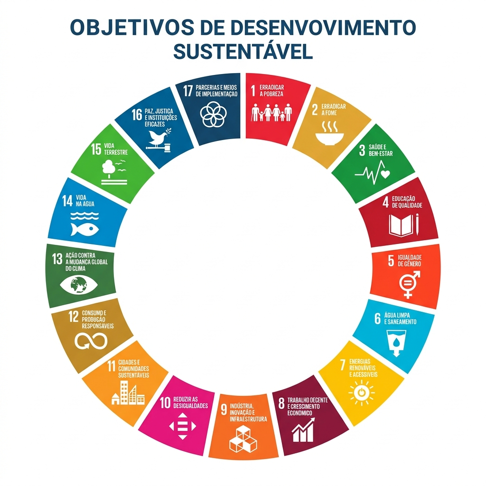

Estudante de Engenharia de Computação | UTFPR
william.yamaguchi2@gmail.com | linkedin.com/in/WilliamYamaguchi | Cambará, PR | (43) 92001-0238
Estudante de Engenharia de Computação na UTFPR, apaixonado por tecnologia, automação e desenvolvimento de software.
WEG | Jan/2026 – Presente
Desenvolvimento de automações e manutenção de sistemas internos da empresa.
UTFPR – Universidade Tecnológica Federal do Paraná | 2023 – 2027 (em andamento)
Cursando o 7º período.

Como futuro engenheiro de Computação, acredito que a tecnologia pode ser uma poderosa ferramenta para a promoção dos Objetivos de Desenvolvimento Sustentável. Pretendo contribuir especialmente com os seguintes ODS:
Acesse o site oficial: brasil.un.org/pt-br/sdgs